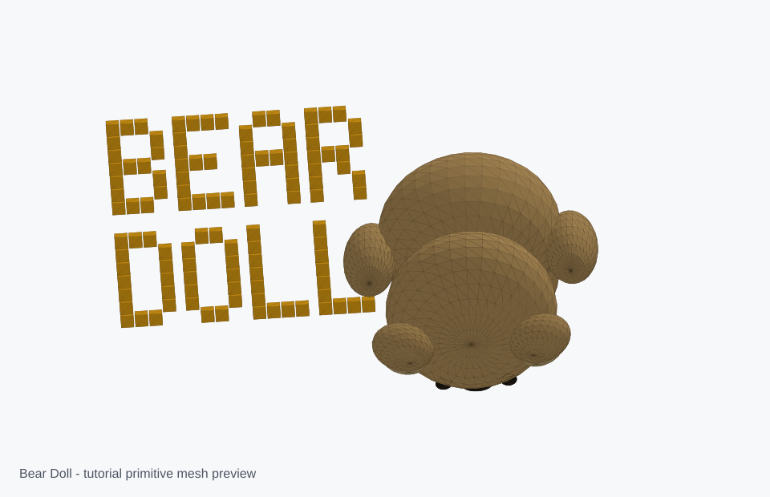

Bear Doll Model
Built from [1DAY_1CAD] BEAR DOLL (Tinkercad : Know-how / Style / Education) by 1DAY_1CAD : Tinkercad 3D Design. The OBJ preserves the tan, cream, black, and yellow materials; the separate STLs are intended for importing as colorable Tinkercad objects.

| Stage | Part | Primitive | Solid/Hole | Dimensions | Position | Rotation | Notes |
|---|---|---|---|---|---|---|---|
| 1 | Body | sphere/ellipsoid | solid | 46 x 36 x 54 mm | 0, 0, 31 | 0,0,0 | Large seated plush body |
| 2 | Head | sphere/ellipsoid | solid | 42 x 39 x 42 mm | 0, -6, 66 | 0,0,0 | Round head sitting into body |
| 3 | Muzzle | flattened sphere | solid | 21 x 8 x 14 mm | 0, -25, 62 | 0,0,0 | Pale protruding mouth area |
| 4 | Ears | sphere/ellipsoid pair | solid | 15 x 9 x 15 mm | +/-17, -6, 84 | 0,0,+/-10 | Mirrored rounded ears |
| 5 | Eyes and nose | small ellipsoids | solid | 3-7 mm landmarks | front face | 0,0,0 | Black mirrored landmarks |
| 6 | Arms | rotated ellipsoid pair | solid | 13 x 16 x 36 mm | +/-27, -2, 37 | 0,0,+/-18 | Drooping plush arms |
| 7 | Feet and pads | ellipsoid pairs | solid | 16 x 29 x 12 mm | +/-13, -18, 12 | 0,0,+/-8 | Seated forward feet |
| 8 | Title | extruded block text | solid | flat 2.5 mm letters | -84, 20, 0 | 0,0,0 | BEAR DOLL workplane label |
| Step | Time | Part | Primitive | Build action |
|---|---|---|---|---|
| 1 | 00:00 | Reference silhouette | assembled primitives | The finished model is a seated teddy-bear doll with a round head, oval body, protruding muzzle, side ears, small black eyes, arms, feet, and BEAR DOLL text. |
| 2 | 01:00 | Head and body | sphere/ellipsoid | Block the main silhouette with large rounded spheres before adding details. |
| 3 | 02:00 | Muzzle and face base | flattened sphere | Add a shallow oval muzzle on the front of the head, then keep later eye and nose landmarks aligned to it. |
| 4 | 04:30 | Eyes, nose, ears | small spheres/ellipsoids | Mirror small black eyes and a nose across the centerline; add round side ears with lighter inner pads. |
| 5 | 06:00 | Body assembly | ellipsoid body plus belly patch | Place the body under the head with a pale oval belly patch, preserving the plush doll proportions. |
| 6 | 08:30 | Arms | rotated ellipsoid | Use mirrored tapered oval arms that hang down the sides of the body. |
| 7 | 10:00 | Legs and feet | rotated ellipsoid | Use forward-facing oval feet and small sole pads so the doll reads as seated. |
| 8 | 12:00 | Final title | extruded block text | Add BEAR DOLL text as flat yellow geometry on the workplane next to the doll. |
Files: bear_doll.obj, bear_doll.mtl, bear_doll_all.stl, and separate color STLs.